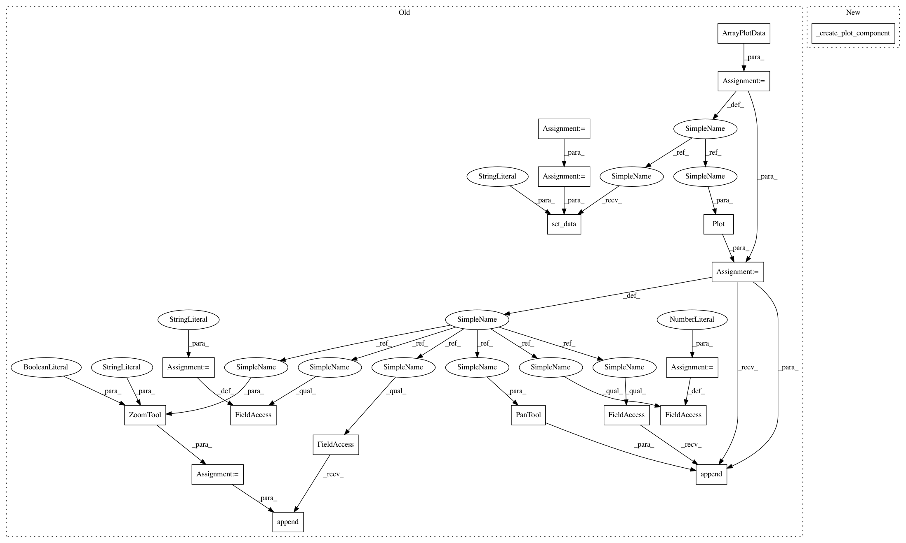

d17c95dd266ae47b9bc552165319405ef7f90f51,examples/basic/cmap_image_plot.py,PlotFrame,_create_window,#PlotFrame#,27
Before Change
xs = linspace(0, 10, 30)
ys = linspace(0, 5, 600)
x, y = meshgrid(xs,ys)
z = exp(-(x**2+y**2)/100)
// Create a plot data obect and give it this data
pd = ArrayPlotData()
pd.set_data("imagedata", z)
// Create the plot
plot = Plot(pd)
plot.img_plot("imagedata",
xbounds=xs,
ybounds=ys,
colormap=jet)
// Tweak some of the plot properties
plot.title = "My First Image Plot"
plot.padding = 50
// Attach some tools to the plot
plot.tools.append(PanTool(plot))
zoom = ZoomTool(component=plot, tool_mode="box", always_on=False)
plot.overlays.append(zoom)
// Return a window containing our plot
return Window(self, -1, component=plot)
After Change
def _create_window(self):
// Return a window containing our plot
return Window(self, -1, component=_create_plot_component())
if __name__ == "__main__":
demo_main(PlotFrame, size=size, title=title)
In pattern: SUPERPATTERN
Frequency: 3
Non-data size: 19
Instances
Project Name: enthought/chaco
Commit Name: d17c95dd266ae47b9bc552165319405ef7f90f51
Time: 2009-01-29
Author: vibha@651a555e-23ca-0310-84fe-ca9f7c59d2ea
File Name: examples/basic/cmap_image_plot.py
Class Name: PlotFrame
Method Name: _create_window
Project Name: enthought/chaco
Commit Name: d17c95dd266ae47b9bc552165319405ef7f90f51
Time: 2009-01-29
Author: vibha@651a555e-23ca-0310-84fe-ca9f7c59d2ea
File Name: examples/basic/cmap_image_plot.py
Class Name: PlotFrame
Method Name: _create_window
Project Name: enthought/chaco
Commit Name: d17c95dd266ae47b9bc552165319405ef7f90f51
Time: 2009-01-29
Author: vibha@651a555e-23ca-0310-84fe-ca9f7c59d2ea
File Name: examples/basic/scatter.py
Class Name: PlotFrame
Method Name: _create_window
Project Name: enthought/chaco
Commit Name: d17c95dd266ae47b9bc552165319405ef7f90f51
Time: 2009-01-29
Author: vibha@651a555e-23ca-0310-84fe-ca9f7c59d2ea
File Name: examples/basic/scatter_custom_marker.py
Class Name: PlotFrame
Method Name: _create_window